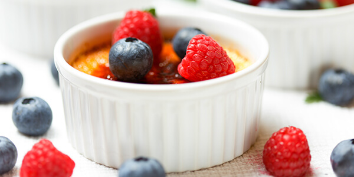

Якщо ви в захваті від ніжних повітряних десертів, ягідне суфле на основі кисломолочного та вершкового сиру неодмінно припаде вам до смаку.
Пишна густа піна зі збитих білків забезпечує цьому вишуканому французькому десерту прекрасну м’яку текстуру. Ягоди додають йому спокусливого медового солоду та легкої кислинки. А завдяки сирній основі ця смакота ще й надзвичайно поживна.
Для приготування повітряного сирного суфле чудово підійдуть вишня, полуниця, малина, чорниця, журавлина. Можна використовувати як свіжі, так і заморожені ягоди.
Ягідне суфле готують за лічені хвилини: випікають у духовці, варять на водяній бані або додають желатин та заморожують.
Полийте готове суфле медом, варенням чи перетертими ягодами, прикрасіть гілочкою м’яти — і у вас вийде надзвичайно смачний та вишуканий десерт, вартий подачі в найкращих французьких ресторанах.
Ягоди в цей десерт можна додати двома способами. Перший, який ми пропонуємо, — викласти цілі плоди на дно форми й залити сирною масою. Другий — попередньо збити ягоди в блендері й перемішати із сиром. У такому випадку у вас вийде суфле спокусливого ніжно-рожевого кольору. Що солодші ягоди ви оберете — то менше цукру потребуватиме десерт.
Інгредієнти:
Ніжне ягідно-сирне суфле готове! Подавайте охолодженим.